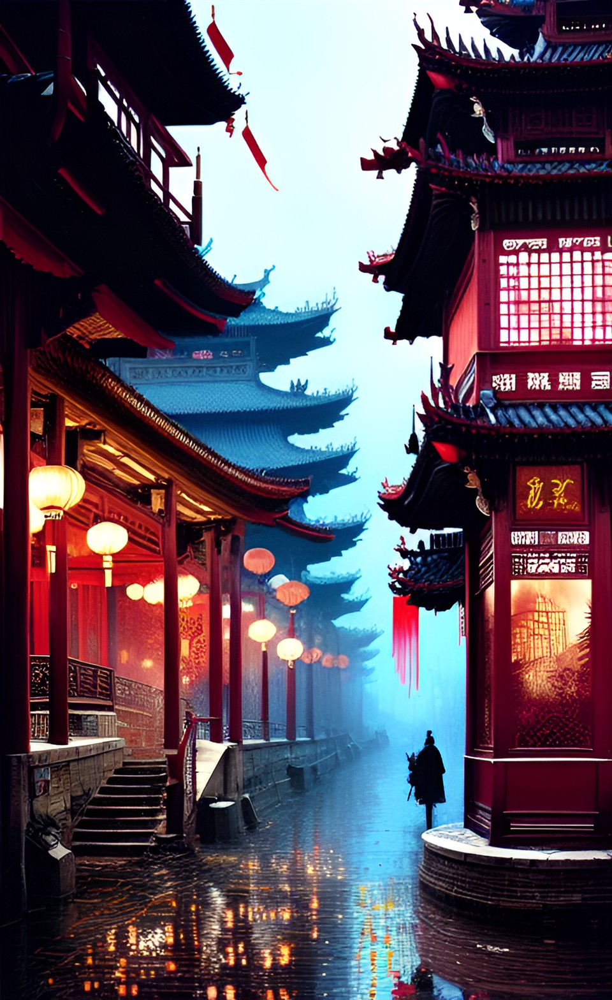
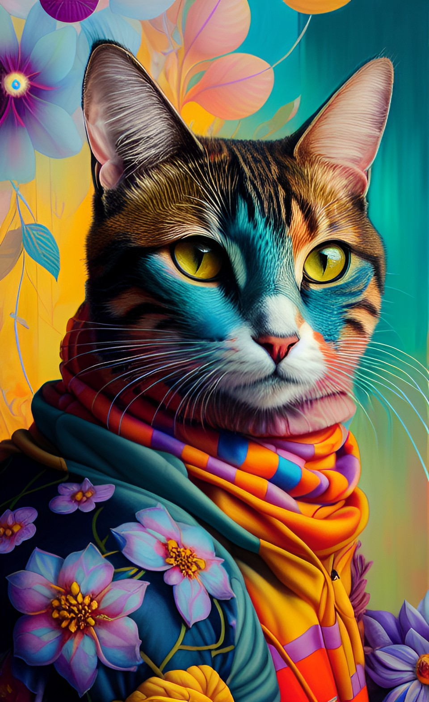

daphno is here gain. al painter, as other al porgrams, has computer software inside too. l used wombo, which is an al painter program, created 2 different al pictures. the whole process is done by al machine.
in wombo,, you can choose the art style you like, such as 'realistic' or 'fantsy', then click the 'generate' bottom, the al robot will finish the artwork based on your chosen style. before this step, you should type a keyword, refers to the theme of the painting. one of the work is a picture of Chinese temple, another one is the image of a cat.
the picture of chinese temple:
to create this image of temple, the only material you need is a computer. l added the element of 'fantasy', to make the picture have a sense of secret and dream, imagination.
the picture of the cat:
 again the only material you need to create this cat is a computer and a program(such as wombo l use). l added the element of 'impression' during the process of modification, to create an elegant sense of this image.